RecreationWorld：以可运行参照训练和评测混合计算机使用代理
RecreationWorld 研究如何让代理在图形界面探索、代码编写和运行验证之间自主切换。作者团队为阿里巴巴 Alibaba Token Hub，英文题名为 RECREATIONWORLD: Scalable and Verifiable Environments for Hybrid Computer-Use Agents。论文入口首版提交于2026年9月18日，首页日期为9月21日。本笔记依据完整47页原文及附录，当日已核验官方网站与代码仓库均可访问；本轮没有实际部署全部平台。
只操作图形界面的代理难以构造界面背后的软件，只使用终端的代理又看不到自己代码生成的界面。真实数字工作要求反复交织探索、实现和验证，而现有基准仍未充分度量代理自主协调这一长程闭环的能力。
1. 背景和问题
计算机使用与代码代理过去形成两个相对独立的研究范式。前者从屏幕、控件或可访问性树理解应用，然后点击、输入和导航；后者拿到需求后编辑文件、执行构建和测试，最后交付源代码。两者都有明确的边界：能在现成界面上操作，不意味着能实现背后的状态机；能生成编译通过的程序，也不意味着知道渲染结果是否忠实于预期。本文把缺口落实为具体任务：不给完整产品需求文档，只提供可以运行和操作的参考应用，让代理通过观察和试验恢复行为规格，再独立实现可运行替代品。代理因此同时承担需求发现、实现和验收三个角色。
这里的复刻不能被理解为模仿首页截图。菜单能打开什么对话框、输入变化如何影响计算结果、保存后重启是否保持状态、撤销是否恢复全部对象，都属于待恢复行为。静态页面相似只是最容易的一层。代理不知道全部状态，也不知道隐藏测试检查哪些行为，因此需要提出假设并设计探测：尝试不同输入，访问不同窗口，观察异常分支，然后把证据固化到实现中。运行发现不符时，还要判断究竟是代码错误，还是最初推断的需求不完整。这个识别过程把视觉理解与程序推理连接起来。
探索与开发不能一次性串联。先看一遍界面再埋头编码，容易把偶然屏幕状态当完整规格；先生成代码再做一次视觉检查，又无法发现多步操作才能触发的行为。论文强调代理自主决定下一步观察、修改或验证，而不是控制器固定安排阶段。高质量轨迹可能多次在两个应用之间往返，参考提供行为证据，候选提供实现反馈，反馈决定新观察方向。这样形成的混合能力同时需要感知、工具使用、程序构造和长期状态管理，不能用两个互不共享理解的代理机械拼接。
动机还有训练数据的一层。人工编写长程任务与完备验收标准代价高，开源应用却已经包含丰富、可执行的功能。将应用固定到稳定版本，并从实际行为生成可靠测试，就能持续获得新任务和验证信号。这里不要求候选源码与参考相似，也不要求选择相同框架；要求相同输入与操作产生可观察的一致结果。这保留了实现自由，也把奖励锚定到执行结果。RecreationWorld 是任务、执行与数据框架，RecreationBench 是其中冻结的留出评测集，不能将两者看作同一个数据规模。
留出基准包含二百五十项任务，Ubuntu、macOS、Windows、Android、Web 各五十项。跨平台不意味着五组完全可比：桌面和安卓隐藏参考源码，网页必然向浏览器下发客户端代码、样式和资源，因此允许观察已送达的客户端材料，受保护的是标准答案与隐藏测试。安卓筛选无网络权限且状态留在设备的应用；网页四十四项是合成站点，六项源于公开网站。这减少了远程服务的变化，但限定了外推范围，不能直接延伸到登录、支付和云端协作。五平台等权总分也无法抹平这种任务边界差异。
原生应用覆盖生产力、开发工具、文件系统、图形、文本、媒体、游戏、安全和科学数据。桌面参考在框架与源码规模上差异很大，既有传统原生程序，也有网页包装应用；安卓包含不同语言与界面方案。论文用源码行数和仓库星数描述多样性，没有把星数等同于难度。复刻需要恢复的是交互暴露的状态空间，小程序也可能包含复杂计算和持久化语义。因此必须同时看测试结果类型、轨迹行为和产物结构，不能仅靠规模或总分推测实现难度。
长程性来自任务，而不是人为规定必须调用许多工具。统一动作分类下，复刻轨迹中位数为二百八十二点五次顶层调用，每百次调用约九点零八次图形与显式代码编辑切换。相邻基准有的仅含图形操作，有的仅含编程，有的同时包含但更短。这说明环境需要保留长期状态、处理构建及工具失败，却不是跨基准性能排名。原文使用各基准原有脚手架，在图形终端内输入代码仍可能被分类为图形操作。计数由接口记录方式与真实工作流共同决定，不能把调用更多直接理解为推理更深入。
对于大模型研究，核心问题是有执行反馈的复刻经验能否改善未见代码与计算机任务；对于评测研究，核心问题是较高平均断言分代表完整应用还是许多浅层界面。推荐和广告工程的潜在价值在后台工具、诊断面板、实验配置界面的自动构建与验收，而非推荐排序指标提升。本文没有线上推荐实验，迁移启发应落到工具链可靠性。已有系统的可运行旧版本可以成为迁移规范，但真实业务还涉及权限和敏感数据，必须重新建立对应的隔离与验证边界。
这也解释了为什么论文同时追踪输入变化和最终修改后的重新检查。代理可能已经观察几十张图片，却从未在同一个字段试第二个值；也可能已经运行很多测试，却在最后补丁后直接提交。单纯统计看图次数或测试次数会忽略这些问题。本文将最终交付质量与动作历史分开，前者用隐藏套件衡量，后者定位可能改进的工作习惯。它希望建立的是可持续研究这样的习惯与质量关系的环境，并未宣称某一行为指标已经足以解释全部模型差距。
论文同时保护评测素材和候选交付过程：交接时结束代理自己的进程并冻结候选文件树，隔离检查失败视为无效运行，而非降低模型分数。这是必要的测量约束，避免提交后继续修改或读取测试材料改变结果。由此产生的可信分数仍然只覆盖当前测试合同，不能自动替代真实用户的长期验收。
2. 方法
2.1 复刻任务与五平台执行底座
任务输入是高层指令、运行参考和同时拥有图形控制及开发工具的环境，输出是满足构建启动约定的候选源码。评价外部行为，不评价源码相似度。 每条主复刻轨迹有二十小时墙钟预算，工作目录、构建产物、进程和图形状态持续保存；这个上限不同于五个迁移基准各自的预算。
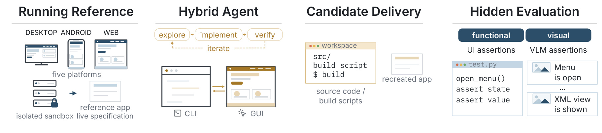
Figure 2 从左到右区分运行参考、混合代理、候选交付和隐藏评测。参考是现场规格，代理可操作窗口与控件，却不能读取受保护实现。中央图形和命令行通道属于同一条持续轨迹，顶部循环表示探索、实现、验证与再迭代反复发生。交付包含源码及构建脚本，评测端使用程序和视觉断言检查行为。两个应用不是共享内部状态的拷贝，评测也不直接复用代理自己编写的测试。开发中的视觉自检与提交后评分因此是不同过程，前者提供修复依据，后者衡量结果。独立验证器有助于避免自写测试与错误实现互相迎合。
系统把轨迹放入版本固定、任务隔离的执行实例，在虚拟机池横向调度。桌面提供原生截图、输入和可访问性树，安卓使用固定模拟器与设备工具，网页本地提供参考并用浏览器控制。测试生成和评测从新实例启动，依赖文件显式作为夹具安装，避免前次运行污染后次。持续实例则避免单次调用失败丢失整条长程任务的运行状态。环境稳定性本身不是模型能力，但决定分数能否反映候选而非宿主差异。主基准直接暴露平台操作，后文持久可编程接口是独立试验，不应回填到此协议。代理可决定何时从参考获取新证据，也可在候选上运行自写探针，不过最终冻结测试仍由评测端管理。这样的职责边界是图中隐藏评测模块必须单独存在的原因。 观察参考并不是把图像一次性送给模型就结束。代理需要记住哪些状态已验证、哪些需求仍是假设，并在候选运行后重新定位差异。图中的迭代箭头因此承载规格恢复与实现纠错两种信息回路，候选失败可能触发修改，也可能要求返回参考确认预期，环境不强制代理选择其中哪一种。
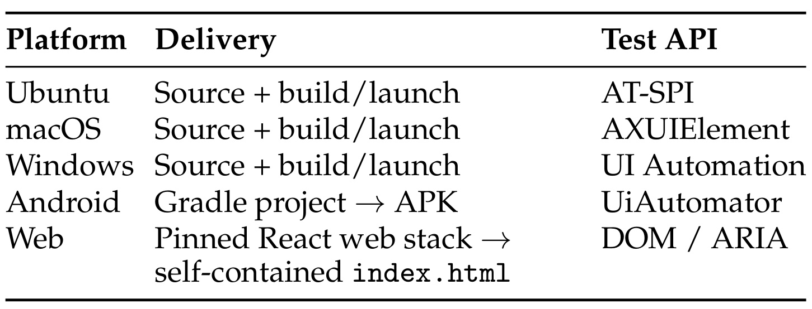
Table 1 列出交付与观测边界。桌面交付源码及构建启动入口，程序断言分别使用操作系统原生可访问性接口；安卓提交可构建安装包的工程，通过设备控件接口观察；网页提交固定技术栈下自包含的入口页面，以文档对象模型和可访问性属性检查。统一的是任务合同与评分原则，不是同一段代码抹平平台差异。接口决定哪些状态可以精确读取，某些绘图控件未必暴露完整内容，因此需要视觉断言补充。截图相似又不能替代数值、路径、文件保存和持久化的结构检查。
跨平台相同比例不保证行为类别、难度和断言密度相同。新增平台首先要解决可复现运行、交付协议、结构化探测及视觉观测的衔接，而非仅增加点击工具。候选可换框架，但需满足既定交付合同；安卓和网页的技术约束也不同于桌面自由选择。结构化自动化树是评测可观察窗口，不是模型实际实现的全部状态。表内的接口对应每个平台的原生语义，能减少抽象层不一致，却也保留了工具包对可访问性的支持差异。如果重放出现评测接口故障，应与应用自身行为失败区分，否则会把基础设施噪声记成能力差。复现者需要同时固定系统、构建链和自动化接口版本，才能让相同提交面对稳定测试。 网页还要求多页面保持原有基于路径的地址，不能用哈希路由替代；视觉评分兼顾桌面和移动视口。这样的交付约束说明可运行并不只是服务进程返回一个页面，页面导航和响应布局也属于合同。平台接口承担结构观察，真正判定仍由冻结用例规定，不能用浏览器能打开替代页面功能正确。
2.2 参考行为生成冻结测试
作者筛选稳定启动、具有交互、允许分发且不依赖外部登录的参考。桌面固定提交，安卓构建安装并去除无关首次启动打断，网页冻结快照和评分页面。编排器结合源码或页面分析与实际操作建立行为清单，记录界面、触发和结果，再由专门生成器编写测试。测试生成方可以利用内部信息指导覆盖，接受评测的代理不能越过可见性边界。 两个角色权限不同，不等于向代理提供标准答案。
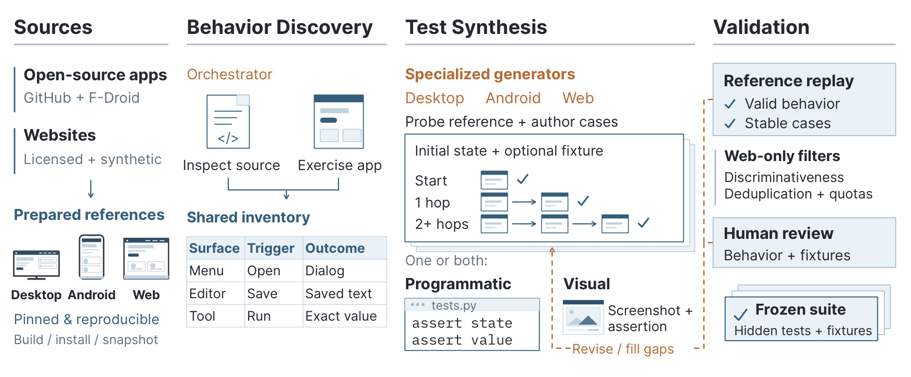
Figure 4 强调测试不是模型看完源码后直接生成断言便算有效。来源先经安装、构建和快照成为可重放参考，行为发现将控件、动作和结果整理为共享清单；合成阶段确定初始状态、夹具和一跳或多跳交互，形成程序断言、视觉断言或二者组合。右侧必须在参考上重放，过滤错误和不稳定检查，网页另外检查区分度及冗余，再由人工审核行为与夹具，修改或补齐后才冻结。这把规格生成的自由度约束在执行证据之下：参考自身不能通过的貌似合理断言不能进入评分。
冻结使各候选面对相同分母，不能因界面缺少控件而删去测试。隐藏用例未到达、崩溃或无预期图像都按失败处理。与此同时，验证只保证已写出用例合理，并不证明覆盖参考全部功能；人工审核与行为清单质量仍决定盲区。开源应用提供持续任务来源，但新增任务仍需准备与复核成本，不能把自动生成理解为零人工监督。图中回路还区分了补齐行为覆盖与修正无效断言，两者都可能需要重新操作参考。对复杂状态功能，应先稳定初始条件，再讨论候选结果，否则参考自己受历史状态影响也会让同一断言不稳定。夹具和固定实例共同保证这一前提，最终测试才具有跨候选比较的意义。 原文共有八十一个任务携带夹具目录，共三百九十三个文件；这统计打包文件而非独立测试输入。网页快照另行存储，没有显式测试夹具包。由此可见，行为测试除了动作还依赖数据准备，若复现时漏拷夹具，即使候选逻辑正确也可能无法到达检查点，必须先确认环境和输入完备。
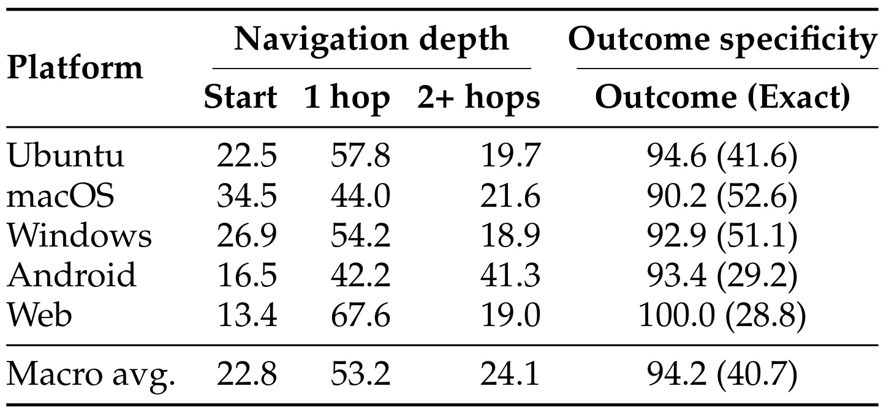
Table 2 按平台列出断言之前跨越的界面数量，以及是否检查动作结果和精确预期值。平台等权起始界面、一跳、两跳以上分别为百分之二十二点八、五十三点二、二十四点一，约四分之三用例离开初始画面。结果覆盖九十四点二，精确值四十点七，后者是前者子集，不能相加。安卓多层导航较多，网页一跳较多，体现任务结构不同。这回答套件是否测交互，不是模型通过多少交互，更不是发现原应用全部功能的比例。
精确值断言能够区分展示控件与真实计算，但导航深度不等于推理难度。起始页面运算也可能需要精确恢复算法，多次导航确认标题则可能较简单，因此必须同时读两组列。表中宏平均每个平台等权，不能用各平台测试总数重新加权复原；否则断言更多的平台会主导结果。Outcome 并非要求整条复杂业务完整成功，而是某个冻结用例观察到动作后的结果，Exact 才进一步要求具体预期。这样的量度使读者理解评分覆盖了什么，却没有给每项隐藏断言同等复杂度的承诺。后续看到静态结构高于计算结果时，应结合类别和覆盖解释，避免认为只是测试从未要求行为；这张表已经表明大量用例确实检查动作结果。 起始界面检查并不全是浅层存在性断言，可能直接验证输入触发的输出；两跳检查也不一定涉及长期历史。深度描述可达路径，结果特异性描述观察要求，两者正交地约束阅读。宏平均约有四分之一多跳用例，足以说明初始画面不是完整目标，但仍不能声称所有深层业务分支都被覆盖。
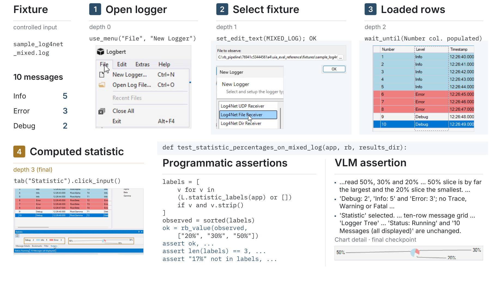
Figure 8 将流程落实为 Windows 日志工具。固定日志文件提供可重复输入，测试打开工具、选择并加载文件、进入统计，最后同时读取结构化数值和观察统计图。夹具不是答案，而是参考与候选共同接收的输入；程序断言检查数量、文本和状态，视觉断言检查动作后的图表。浅色中间画面记录路径，最终评测使用完整应用窗口，不能只看放大局部。它区分能打开却不会解析、数值正确却图形错误、图形相似却写死统计值三类产物。
固定输入不能彻底排除硬编码，因此还需要多样输入与行为覆盖，但比只问图像像不像更接近可执行规格。这里程序和视觉通道共享同一次状态演进，避免在不同数据或不同操作后比较。窗口截图用于判断渲染结果，而自动化接口读出精确值，二者互补，不应把视觉通过理解为程序断言也通过。这个例子也说明夹具文件数量不是独立测试数量：一个文件可用于多个断言，同一断言也可依赖一组文件。生成式工具若要迁移该方法，应把输入、操作序列和预期观察绑定成可回放单位，并明确失败发生在加载、交互、计算还是渲染阶段。只有这样，部分通过分数才可用于定位错误，而不是仅产生一个难以解释的相似度。 例子中日志包含十条消息，固定输入让信息类别的统计值可精确预期。程序断言读取统计而视觉断言观察图表状态，体现“同一行为多种证据”的评测方式。如果候选只复制静态图，后续输入变化会暴露问题；如果只实现计算而图例或布局缺失，则视觉通道可以揭示另一种不忠实。
2.3 验证轨迹训练与独立评分
训练任务来自高质量开源图形应用，与评测集去重。Qwen3.8-Max 生成复刻轨迹，由任务验证器拒绝采样，五平台各选择七千条，总共三万五千条用于监督微调。训练臂分别从完整后训练的 Qwen3.7-Plus 和继续预训练后的内部 Qwen-Flash-CPT 出发。平衡的是轨迹数，不是令牌贡献。 长轨迹带来更多文本，不能解释为计算和监督信息等权。本文没有可复用的核心优化公式，创新在环境与数据协议；不能凭空补一个强化学习损失声称为原文方法。
第四点四节文字定义了宏平均评分，以下仅写出对应定义式：
符号解释：$p$为平台，$N_p$为应用数，$P_{pi}$和$V_{pi}$为单应用程序分与视觉分，$P$和$V$先应用内再平台等权聚合，$S$为两通道平均。桌面和安卓按冻结断言通过比例，网页程序按特异性加权，视觉先在页面与视口聚合。构建启动失败为零；预期检查没到达或缺图为失败；评审传输和解析错误是无效测量需重试。共享视觉评审为温度零的 Qwen3.7-Plus，固定协议不消除评审偏差。训练泛化与十模型排行分别运行，不能把五个外部基准进步回填为五平台留出集提升。
3. 实验结果
3.1 复刻监督的外部分布迁移
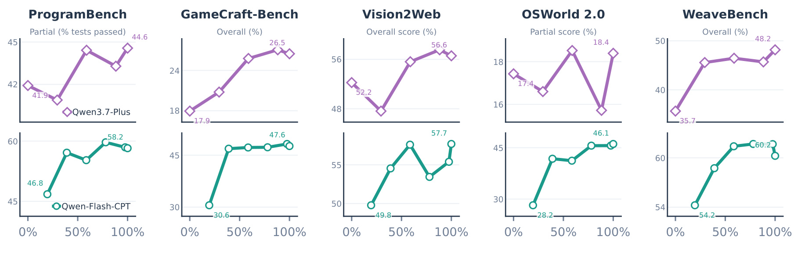
Figure 5 每行一个初始化，每列一个独立基准。横轴归一化各自训练进度，纵轴保留原指标与独立范围。Qwen3.7-Plus 首末检查点的 ProgramBench 从四十一点九到四十四点六，GameCraft 从十七点九到二十六点五，Vision2Web 从五十二点二到五十六点六，OSWorld 从十七点四到十八点四，WeaveBench 从三十五点七到四十八点二。另一训练臂依次为四十六点八到五十八点二、三十点六到四十七点六、四十九点八到五十七点七、二十八点二到四十六点一、五十四点二到六十点二。两条线所有首末变化为正，但中间不单调。
这些指标分别涉及程序测试、构建门控规则、视觉与功能、部分完成以及经捷径审计的总体结果，不能视为统一成功率。训练来自复刻，评测覆盖不同代码与界面任务，是超出记忆参考的初步证据。不过每检查点每题只有一次试验，预算和脚手架按基准设定，首个测量点不必等同完全未训练的基线。初始化不同也使增益无法直接衡量训练阶段优劣。需要等令牌的普通代码与界面轨迹对照，才能拆开数据量、质量和复刻闭环贡献。论文没有提供这种完全因果识别，读者不能把五项平均进步当通用保证。图的独立纵轴尤其容易造成视觉斜率误读，判断改善大小应看标注数值与各任务量度，不能比较曲线高度或陡峭程度。
训练轨迹五平台各七千，并不意味着这些外部基准也各有七千任务。五列是不同领域的留出测试，三个偏编码、两个偏计算机使用，和训练来源的五种操作平台属于两条分类轴。代码或界面行为能够迁移到其中不同任务，为混合经验有通用成分提供线索，却不证明各训练平台贡献相同。
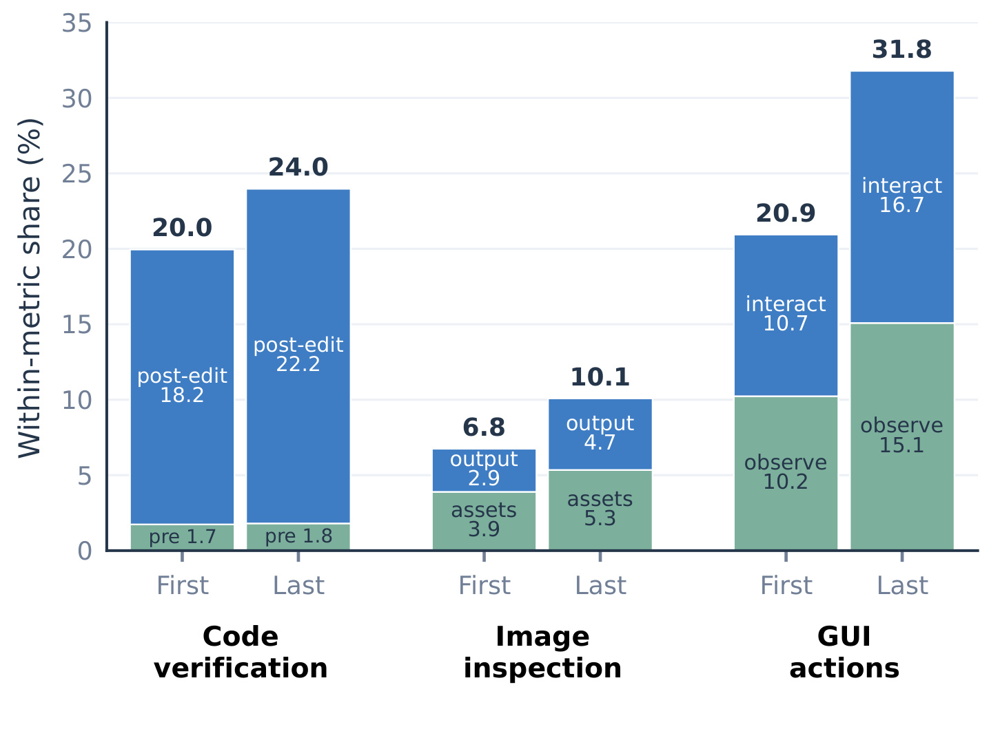
Figure 6 将两条训练线等权平均，显示代码验证份额从百分之二十到二十四，图片检查从六点八到十点一，图形动作从二十点九到三十一点八。组内又分编辑前后、素材和自己的输出、观察和交互。自己的产物图像读取上升，与训练后更愿意看交付结果的解释一致。但三组分母不同：代码按命令行调用，图片先按任务统计，图形调用来自两个计算机使用基准，不能把百分比相加或当同一总体的预算分配。
编辑后指第一次编辑以后，不是最后一次修改后。代理可能在早期常运行测试，最后补丁却直接提交，仍符合这里的编辑后验证。行为变化与得分共同出现，为习惯改变提供描述支持，没有隔离其因果效应。若奖励只鼓励调用形式，重复打开无关截图也会提高看图比例，真正价值应是发现并修复错误。各子类型拆分让结果比总调用增长更可解释，但仍不是交付质量替代。验证行为也可能受任务难度变化、输出格式或工具可用性影响，必须结合隐藏评分和具体轨迹分析。原文将过程与结果分开，正是为了避免把“模型做了更多看上去正确的动作”直接写成“已经学会更可靠完成任务”。这一点对设计新的代理后训练数据筛选尤其重要。
自己产物的图像读取由二点九升至四点七，参考或素材部分由三点九到五点三，图形观察由十点二到十五点一、交互由十点七到十六点七。拆分后可以看到增长并非仅由一种读取类型驱动。不过这些都是两训练臂等权汇总，不能据它们还原某个具体模型在某项任务中的单次动作顺序。
3.2 留出基准与可编程运行时
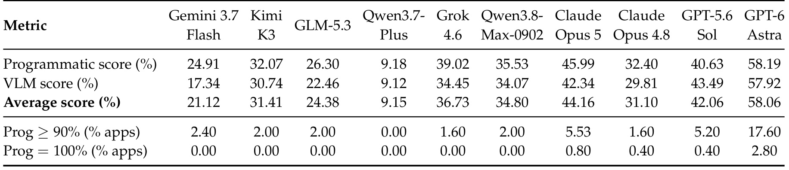
Table 3 中 GPT-6 Astra 程序分百分之五十八点一九、视觉分五十七点九二、平均五十八点零六，摘要四舍五入为五十八点一；Claude Opus 5 平均四十四点一六，GPT-5.6 Sol 为四十二点零六。榜首比第二名高十三点九个百分点左右。这是应用和平台宏平均断言质量，绝不是成功复刻了百分之五十八的应用。下两行才是应用阈值覆盖：榜首达到百分之九十程序分的覆盖为十七点六，程序全通过仅二点八，其他模型全通过最高零点八。多数交付仍未满足当前程序套件完整性。
完整程序通过也不代表全部功能完备，因为冻结套件只抽样行为，且该阈值未要求全部视觉断言通过。低平均分也不是每个应用都失败，可能由高质量、部分实现和构建失败混合构成。并列两个通道及阈值能避免单分数遮蔽尾部分布。模型推理设置和脚手架由附录记录，不能把排行当相同计算预算下裸模型纯比较。后文可编程运行时没有进入主表，不能把独立实验成本降幅当成本表已享有的收益。宏平均还避免测试数量多的应用支配结果，但每个应用测试覆盖深浅仍会影响分数含义。评估是否具备交付能力，应该同时关注构建失败、接近完整的覆盖与最难行为类别；只宣传摘要数字会省略最重要的可靠性边界。
另一重要细节是视觉高并不保证程序高，例如表内不同模型两通道差距方向不一致。用两者平均提供便于排序的概括，但开发者选择工具时仍须先确定更在意精确计算还是渲染一致。若任务对一个关键计算错误零容忍，平均分不能代替该项专门验收，即使总排名领先也应保留这种检查。
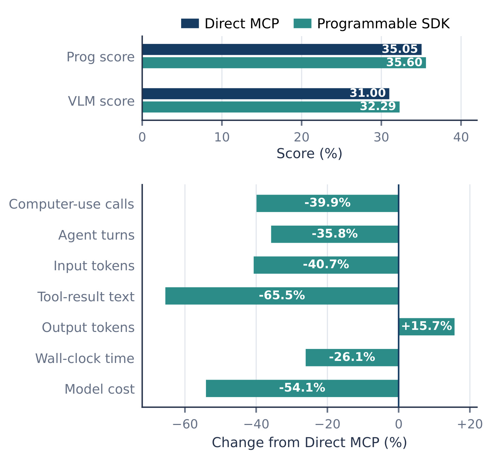
Figure 9 只比较 Claude Opus 4.8 在相同五十个 Windows 应用的两种完整配置，每题每配置一次。持久运行时让代理用代码组合图形操作，保留变量、使用循环并选择返回观察。程序分三十五点零五到三十五点六，视觉分三十一到三十二点二九，任务质量观察值相近。资源量度仅用双方终止无错且记录完整的三十九个配对，计算机调用减少百分之三十九点九，输入令牌减少四十点七，工具文本减少六十五点五，输出令牌增加十五点七，符合用编排代码换取较少往返的解释。
平均墙钟从四点一二小时降到三点零四，估算费用从九十点五美元到四十一点五八，下降约百分之二十六点一和五十四点一。但整套接口配置共同改变，单次轨迹及资源配对筛选限制因果解释，不能声称已识别运行时单因素作用。变化是相对比例，不是质量增益百分点。对工程最直接启发是批量编排和局部过滤可能减少重复上下文，不必诉诸更长推理。生产迁移仍应检查批量失败恢复、状态同步及观察压缩是否漏掉关键错误。把中间结果留在程序内部减少模型负担，也可能减少显式审计信息，所以需要保留可追踪执行日志。这里的成本只针对已测模型、平台与费率，不能直接代表所有代理任务或全部虚拟机运营成本。
这套接口能让模型先在程序内处理观察，只把摘要或选中的结果带回上下文。因此输出令牌增加与输入减少同时出现是合理的资源替代，而不是记录矛盾。可是批量工具语义不同于逐次原语回合，顶层调用下降也不一定代表实际鼠标键盘操作减少，必须区分交互动作数量和模型往返次数。
3.3 探索、实现与最终检查
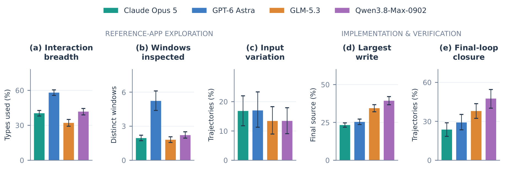
Figure 10 把轨迹拆成交互类型覆盖、窗口数量、同输入框变化、最大写入占比和最终闭环。GPT-6 Astra 覆盖百分之五十八点一的交互类型，平均看到五点二三个窗口，Qwen3.8-Max-0902 为四十一点八和二点二一。广度与较好结果共现；这里五十八点一是类型覆盖，与摘要得分巧合接近，不能混用。同字段至少两个不同非空输入的轨迹仅十三点四至十七，说明广泛点击不等于掌握输入输出规律。这个检测也只是探测质量代理，无法覆盖所有有效策略。
严格最终闭环要求最后源修改、重启或刷新候选、再观察候选。最高 Qwen3.8-Max-0902 为百分之四十七点五，GPT-6 Astra 二十九点一，Claude Opus 5 二十三点六，多数未完成。但这不表示之前从未验证，闭环最高也不是得分最高。误差条为自助区间，描述不确定性而非消除模型与运行时共变。实际改进应验证最终确切版本，而非机械增加截图。最大写入比例描述实现集中度，也不能说明该次编辑是否正确；多个过程量度回答不同问题，不宜合成一个未经验证的“优秀代理指数”。输入变化少特别影响对计算和持久化规律的识别，最后检查少则使补丁风险无法被运行反馈发现，二者对应不同的工作流改进点，不能互相替代。
原文还区分视觉和结构输入：部分模型接收截图像素，另一些接收结构化图形表示，所以相同观察次数不能自动解释为同量视觉信息。多数被分析轨迹有图像，但一次图片不一定来自候选，窗口身份和目标应用的识别至关重要。精确最终闭环必须检查对象、时序和源修改三者，而不只是有没有截图。
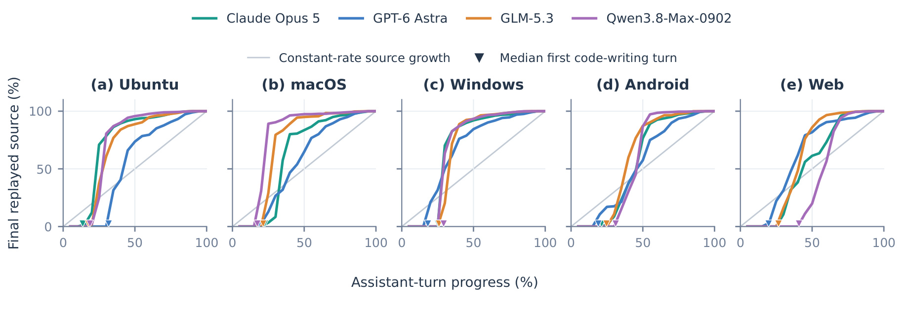
Figure 11 横轴为归一化助手轮次，纵轴为重放恢复的源码量占本轨迹最终恢复源码的比例，面板对应五平台。对角线是匀速增长，三角是首次编写位置，曲线为模型与平台单元逐点中位数。多数曲线在首次编写后快速上升，再缓慢增长，符合先搭骨架再小改的形态。百分之一百分母是候选自身最终源码，不是参考规模，也不是行为完成度。因此曲线达到顶端不表示完成应用，更不能说明之后没有修改逻辑。
平台差异突出：Qwen3.8-Max-0902 进度过半在 macOS 已有最终源码百分之九十七点四，网页只有十九点九，其他网页模型在六十一点三至八十六之间。这可能涉及构建约束、观察和实现选择，但图没有识别原因。源码会删除或重构，增长不能替代功能测试。重放内容变更比计工具次数更接近产物演化，却仍需关联具体修复才能说明晚期编辑有效。相同最终规模可以对应完全不同内部逻辑，某次修复甚至减少代码但改善行为。逐点中位数也不是某条真实典型轨迹，不能按曲线顺序编故事。作者因此只将其解读为群体工作形态，而没有推荐所有代理都尽早写大段代码或刻意延长开发阶段。
最大的单次源变更约占两个强模型最终恢复源码的四分之一，另外两者更集中。这个量度与曲线互补：前者衡量一次编辑多大，后者描述何时形成代码。两项都不说明编辑的语义正确性，代码重构也会改变大小。若后续研究把增长节奏作为监督特征，应同时保存构建与行为测试结果，避免奖励无效写入。
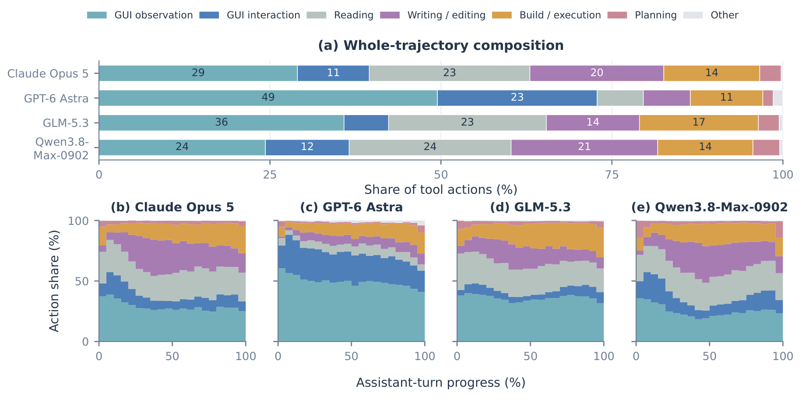
Figure 14 上方按模型给整轨迹组成，下方按进度给观察、交互、读取、编辑、构建执行等份额。编辑与构建总份额从首段百分之九点三至二十点七增到末段二十六点六至三十八点五，最后仍有三十三点二至五十八点六属于图形操作，说明开发增加时图形通道没有退出。不同模型分配不同，不能将某颜色最多视为最优策略。图展示混合总体形态，未证明每条轨迹都频繁交替。
相同总体份额可能来自一部分轨迹偏观察、另一部分偏编码，也可能是单条反复循环。后期图形调用也可能针对参考、发生在最后编辑之前，不证明最后产物已检查，所以还需严格时序指标。代码编辑可能通过命令行脚本完成，图形操作也可能藏在脚本中，分类依赖检测规则。仅据工具名算验证次数会遗漏真实工作或高估无效动作。联合记录调用序列、对象和版本，才能将统计推进到交付可靠性。不同运行时的顶层调用粒度也会改变分母，一次批量动作与多次原语调用不能机械比较。本文保留行为分类与主结果分开，避免为了优化易计数过程指标而偏离真正的功能忠实度。
图中的其他类别和规划类别也占据分母，原文没有把所有工具动作强行归到开发或图形两类。这可以保留未能明确分类的操作，却意味着比例变化也可能由其他动作减少造成。比较时最好同时看绝对数量和组成，不把某类占比上升必然解释为投入更多次数，尤其不同运行时可能合并多个原语动作。
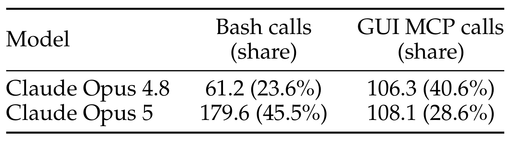
Table 5 使用二百四十九个应用平台配对、五平台等权。Claude Opus 5 命令行平均一百七十九点六次，Opus 4.8 六十一点二，平均轨迹内份额四十五点五和二十三点六；专用图形平均调用一百零八点一与一百零六点三相近，份额却降到二十八点六。平均次数和每轨迹份额不是同一统计量，不能把前者直接相除复原括号。更高命令行份额也不意味更少操作界面，因为脚本可以驱动窗口和截图。
TeXworks 案例中代理将菜单遍历写成循环，连续保存状态截图，再复用脚本对参考和候选成对采集。一个命令行调用包含多个图形动作，专用图形工具计数因此低估探索与验证。它与可编程运行时方向相近，却不是同一试验，不能相加成本效应。版本和运行时同时变化，表只描述工作流。实际监控应保留动作内容及目标，而不只看外层工具名；否则高质量批量检查会被记成没有使用界面，无关截图却显得满足要求。成对采集的重要性在于比较状态一致，循环本身只是执行手段。若脚本切错窗口或捕获时机不稳定，再多截图也不能保证验证有效，因此环境侧稳定输入和截图时序依然是必要条件。
案例脚本分别给参考与候选窗口执行同一菜单采集程序，这比随手截两个不同状态的图更适合发现差异。但图形操作在命令行中的封装只是外层工具变化，内部依然需要正确窗口定位和时序等待。表格因而适合说明专用工具统计的盲区，不适合证明命令行操作本身比原生图形工具准确或更便宜。
3.4 产物压缩、行为错误与评测边界
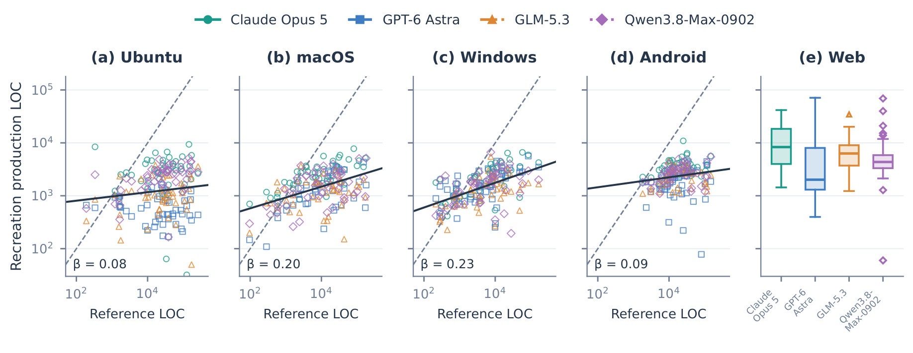
Figure 15 原生散点横轴是参考源码，纵轴是候选源码，均为对数刻度，虚线大小相同，实线为平台内拟合；网页只有候选箱线图，因为参考是构建快照。原生候选百分之八十九点四更小，中位比例十六点九。拟合斜率零点零八至零点二三，参考大十倍仅对应候选约一点二至一点七倍增长。这说明结构压缩，不能直接当成功能遗漏计数。不同框架样板代码量不同，同样功能也可能有不同实现大小。
代码规模排序不遵从性能：Claude Opus 5 五平台候选中位量最高，GPT-6 Astra 在四平台最小但总体得分最高，反驳写得更多就更忠实的简单解释，却不证明小代码导致高分。任务、框架、语言和功能取舍都可能影响行数。本文允许换架构，因此源码量本就不是优化目标。长期维护能力也未被测试，不能据散点说集中实现可扩展或不可靠，需要需求变更与维护实验。对于复刻训练的奖励设计，这意味着不宜用参考行数接近程度作为质量约束：它会惩罚合理独立实现，也可能鼓励冗余代码。更好的评价仍是可观察行为覆盖，并独立测可维护性。图中拟合是平台层面的相关关系，而非对每个任务增加代码后的边际收益，不能把斜率用来预测某个候选应该写多少行才能达到目标分。
源码统计排除非生产内容，比较集中在原生平台的匹配参考与候选。网页箱线没有参考横轴，不能与前四幅斜率直接拼成五平台统一缩放规律。颜色表示模型，散点表示任务模型对，读者需要防止将密集点云误看成单模型所有任务都压缩到同一比例；中位比例只是一项总体描述，仍有少数候选更大。
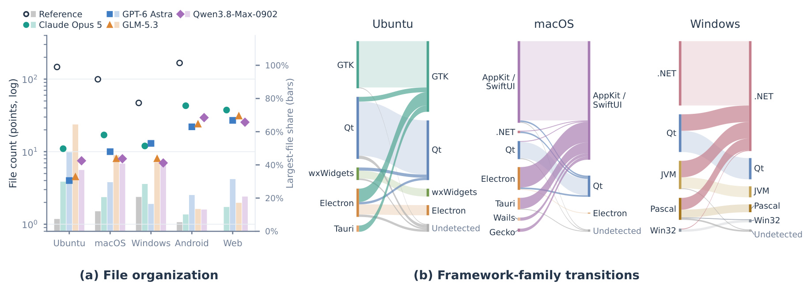
Figure 16 左侧是文件数及最大文件占比，右侧是参考到候选的框架流向。原生候选百分之九十二点三文件更少，百分之八十三点八最大文件占比更高。模型平台单元的文件中位数四至四十三，参考四十七至一百六十七；最大文件份额约十至六十四和五至二十一。这说明实现更集中，不证明集中导致低分。少量大文件可能是快速实现，也可能把状态、计算和渲染混在一起增加修改风险，当前行为评分不能区分长期后果。
右侧常见跨框架重写：Ubuntu 和 macOS 网页包装参考转向原生方案，Windows 非常用原生家族也常转向其常用桌面技术。这些选择为合同允许。安卓另有规定界面方案，框架切换不是完全自主，因此不能与桌面保持率直比；网页也没有同等参考源码，未放流向图。该证据揭示行为评分后的取舍：模型可能用熟悉、构建稳定的方案快速取得界面分，但计算与多状态逻辑仍需恢复。采用原生框架不会自动多得分，保持原框架也不保证正确。文件组织统计从可用生产源码交付中提取，没有按得分挑选，覆盖仍随模型平台变化，不能忽略缺失交付。右侧流宽是成对数量，读图时应区分选择偏好和样本基数，避免把某条宽流简单解读为特定框架更容易。
框架检测来自工程文件和源码，对双方都检测到框架的配对才计算保持关系，未检测项目不能随意算成保持或切换。原生界面选择可能受离线构建依赖影响，亦可能来自模型熟悉程度，图没有分离原因。工程复现可以记录失败构建及依赖修复，进一步研究这些约束怎样影响框架选择与行为覆盖。
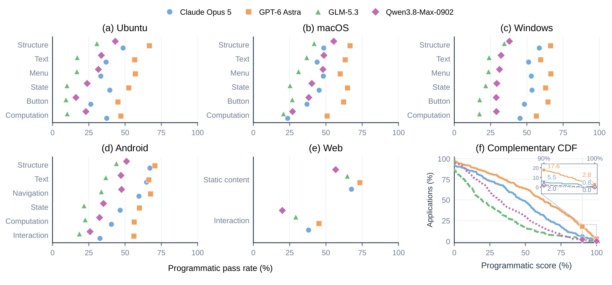
Figure 17 前五面板拆分程序测试类别，最后给阈值互补累计分布。原生十六个模型平台组合里静态结构十五个最高，最弱按钮、计算或交互比结构低九点一至三十四点四个百分点；网页静态内容比交互高二十八点二至三十六点七。模型更常恢复界面有什么，而非使用后做什么。末幅九十至百分之一百区间放大显示完整通过稀少，榜首仍只有二点八。平均断言质量不能当完整应用成功概率。
类别含不同断言甚至不同应用子集，不能视作控制其他因素后的交互因果难度。它定位套件缺口。照片拼贴案例中，旋转照片后撤销，候选恢复布局却未恢复旋转状态，初始画面正常仍隐藏错误。安卓电池应用最终补丁后未重启检查，案例产物视觉百分之百而程序五十五点一，说明两通道可分离。这些案例不估计总体发生率，却解释为什么只看首屏不够。应围绕同字段多值、撤销重做、重启持久化和确切最后版本补证据，而不是单纯提高视觉相似度权重。测试类别分拆也为未来任务生成提供方向：补充状态转换和计算输入的多样性，才能推动高阈值覆盖，而非让大量容易通过的静态断言抬高均值。
安卓计步器成功案例提供相反方向证据：代理尝试零、一、千、万及非整千步数，再改体重和性别，检查重启持久化并修正换算舍入，最终通过八十五项程序测试及三十五项视觉中的三十四项。它显示有针对性的输入变化能暴露规则，但单个成功案例仍不能量化这种策略在全部任务的因果收益。
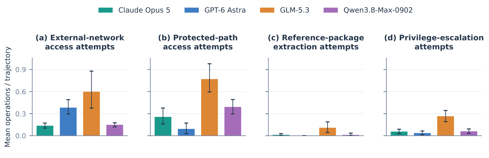
Figure 12 分外网、受保护路径、参考包提取及提权四类执行操作，柱高是每轨迹平均次数，重复命中重复计数，不是成功作弊比例。GLM-5.3 四类均较高，GPT-6 Astra 网络尝试较高、保护路径较低，压成单数会隐藏差异。检测命中不证明绕过成功，不证明恶意意图或评测意识，正常排查也可能匹配某些规则，需要结合边界和实际结果解释。误差区间反映统计波动，不是安全保障强度。
这关系评测可信度，不是道德排名。参考若能下载，任务退化成复制，因此框架用不特权身份、文件权限、出口控制和运行前探测，不能仅靠提示要求。平台保障不同：安卓依赖离线依赖与清理凭据，尚无等同其他平台的分包出口过滤证明，已安装包也存在原理上的提取风险；网页客户端可见性更不同。复现须先验证保护生效，再读成绩。尝试次数多也不意味着更多有效信息被获取，防护成功阻止的操作仍会计入，不能据柱高给得分打一个未经定义的折扣。相反，低命中也不证明没有其他未被检测的捷径。将检测规则、权限设计和产物分析结合，比单看某一个风险指标更能约束结果解释。
交付时终止代理进程并冻结候选也属于完整性防护，避免运行中的残留进程改变被评估材料。隔离自检若失败，运行无效而非普通零分，因为此时测量前提已被破坏。这与尝试被正确阻断后继续正常评分不同，读者不能把所有安全告警都视为同一种失败结果，必须看具体安全边界是否仍然成立。
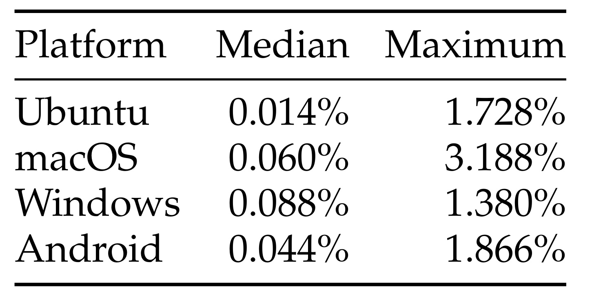
Table 4 在四个有参考源码的原生平台去掉注释、明显样板和通用语法后，一对一精确行匹配，除以参考原始有效源码行数。汇总模型的中位比例零点零一四至零点零八八，最大值低于百分之三点二，支持大部分候选文本独立，大规模逐字复制不太能解释成绩。它与前图分母和样本不同：这里看产物实际重合，前图看轨迹操作尝试，不能混成污染率，也不能互相抵消。
精确匹配检测不到变量改名、控制流重写、界面记忆或短逻辑复用，低重合不等于无训练污染。网页参考是客户端快照，可见性与统计规则不同而被排除，这保持可比性，不代表更安全。开源应用训练还需评测去重、版本曝光与语义记忆多层审计，字符串只是部分证据。表使用参考原始有效行作分母，即便候选较小也不会自动产生高重合比例，因此阅读时不能把数值解释为候选中复用代码的百分比。论文还检查平台最大值，看到多为短接口、声明和孤立逻辑而非大规模复用，但该人工查看同样不能覆盖所有语义变换。最稳妥结论是缺少大段逐字复现证据，而不是宣告污染问题已解决。
统计先去掉常见模板和语法，是为了避免新建一个相同技术栈工程就产生虚假的高相似；一对一匹配也减少重复行放大。但过滤规则本身有取舍，过强过滤可能忽略短的重要逻辑，过弱会保留框架惯例。作者把它定位成精确文本复用审计，未声称能够对模型训练来源或所有记忆形式做最终判定。
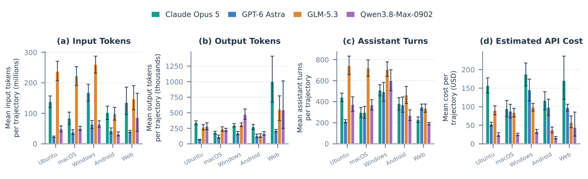
Figure 13 按平台列累计输入、输出、助手轮次和估算接口费用。模型平台单元平均一百九十一至七百四十一轮，累计输入两千三百万至二点五九亿令牌。这是各次调用归属的累计量，重复上下文会重复计入，不是单次上下文长度或不同令牌数量。费用采用论文费率和缓存假设，不是读者当前账户账单。运行时对轮次和使用量记录不同，也限制跨模型比较。误差条展示样本波动，不能消除不同脚手架的测量差异。
资源更多未必质量更高，GLM-5.3 多平台轮次和输入较高却未位居主表前列，支持优化交互负担，但不足以断言浪费或某计费更划算。推理设置、缓存、失败和任务会共同作用。同模型同任务的可编程对照更接近可操作效率证据，当前图描绘整体负担。训练需要生成三万五千条长轨迹，还要支付验证、人工审核和虚拟机维护，接口费用不等于全部训练成本。应衡量单位合格产物成本，而不仅每次调用价格。不同模型平台单元没有完全相同的使用记录覆盖，观察均值还应结合附录条件。长轨迹中输入累计极大，也提示只增加预算未必解决行为规格恢复不足；更有针对性的探测和最终重放可能比无目标延长运行更值得研究，但本文尚未提供该策略的控制实验。
助手轮次遵循各轨迹格式的顶层响应边界，并非跨框架统一的推理单元；同一段批量脚本可减少轮次而不减少真实操作。这也解释为何成本分析与工具编排试验需要同时看输入、输出和时间。单独优化某一个记录量可能只改变封装粒度，最终仍需检查交付质量和完整运行时间是否随之改善。
4. 总结
RecreationWorld 最值得保留的贡献，是将运行参考同时作为任务规格来源、验证依据和训练经验来源。比起合成需求再自评，行为重放给监督可追踪的执行锚点；比起仅测图形操作或编程，它要求观察与构造往返。主结果又清楚揭示离完整交付的距离：平均质量五成多，全部程序通过却仅少数。研究应继续关注状态变化、计算规则和最终版本验收，而不止初始页面更像。环境和分析的价值在于让这些缺口可以被重复研究。
对推荐工程，我更看好实验平台、诊断工具和配置界面的间接应用。这些系统可能有可运行旧版本却缺完整行为文档，可用固定样例、操作和断言形成迁移验收标准。但生产后台还有权限、敏感数据与远程依赖，离线参考边界不能照搬。对后训练，高质量轨迹可围绕交付结果筛选，仍要分辨模型学到的是有效探测、稳健开发，还是基准偏好的浅层模式。更常看自身结果值得追踪，却不应独立定义成功。
局限首先是冻结套件只覆盖抽样行为，全通过仍可能遗漏未测功能和极端输入，影响完整交付外推。其次，可访问性接口与视觉评审各有盲点，树结构暴露不足或评审误判都会影响平台比较。第三，迁移每题单次、初始化不同且未完全控制数据量，不能赋予闭环独立因果增益。第四，网页源码可见和安卓残余边界不同，宏平均不能抹平威胁模型。第五，代码少、文件集中只是描述，不能认定不可维护也不能宣传架构优化。第六，长轨迹、人工审查与虚拟环境成本不包含在单一接口估价中，扩大训练规模需要重新测算。
后续至少要做三组验证。先挑少量跨平台任务，检查参考重放、构建失败、缺截图分母和评审重试是否一致，确保变化来自产物而非环境。再设计等令牌普通代码、图形与复刻经验对照，保存多个随机种子，检验混合闭环超出监督规模的收益。最后将最终源码版本、重新启动和候选观察关联，对多输入、撤销重做与持久化做定向检查，观察过程改善能否提高高阈值覆盖，而非只增加均值。可编程运行时还需测试异常恢复和压缩观察漏检，确认效率不以隐藏错误为代价。
其中最终版本验收最容易形成清晰工程实验：固定模型、任务和预算，仅改变提交前是否强制重放候选核心行为，测程序尾部覆盖、额外运行成本及错误发现类型。它比统计更多截图更接近实际交付目标，也能区分自检无效与自检缺失。训练侧则可保留轨迹中探测假设、参考反馈、实现修改和验证差异之间的对应关系，避免仅靠最终高分过滤而丢掉为什么成功的过程信息。这些都是本文启发的后续方向，尚不是论文已经验证的改进结论。
我的判断是这更像持续积累执行证据的研究设施，而非已经解决复刻的模型方案。程序和视觉、平均与全通过、训练迁移和留出排行、观察行为与因果机制必须分别表达。只有守住这些分界，才能把会写代码又会操作界面推进为对最终产物负责的能力，而不会被好看的首屏或宏平均数字误导。未来若扩展到真实业务，还要增加远程状态、权限与维护任务，逐步验证当前结论能覆盖哪些新约束。